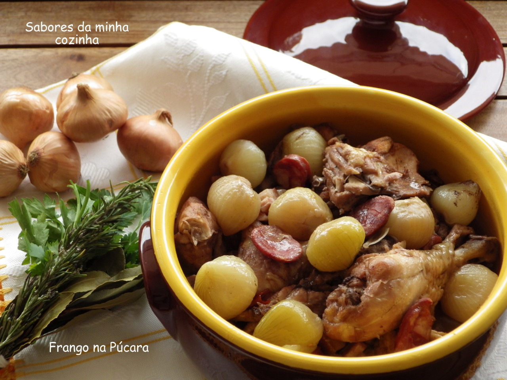

Aves · Frango
Frango na púcara

Ingredientes
- 100 g de presunto cru
- 4 tomates maduros
- 2 dentes de alho descascados
- 1 frango (cerca de 1,5 kg) cortado em pedaços pelas juntas
- Sal e pimenta-do-reino a gosto
- 10 cebolas pequenas inteiras
- 50 g de manteiga gelada cortada em cubinhos
- ⅓ xícara de vinho do Porto
- ⅓ xícara de conhaque ou vinho branco
- 2 colheres (sopa) de mostarda
Modo de preparo
- Escalde os tomates para soltar a pele. Descasque os alhos em água fria.
- Preaqueça o forno em temperatura alta (200 °C). Amasse os alhos.
- Tempere o frango e distribua numa panela de barro refratária com tampa.
- Acrescente presunto escorrido, tomate em cubinhos, alho amassado e cebolas inteiras. Distribua a manteiga.
- Regue com vinho do Porto, conhaque e vinho branco. Junte a mostarda, tampe e leve ao forno até o frango ficar macio (cerca de 1 hora).
Observação: Clássico regional português; o nome vem do tacho (púcara) onde é preparado. Sirva com batatas fritas, palitos e arroz.